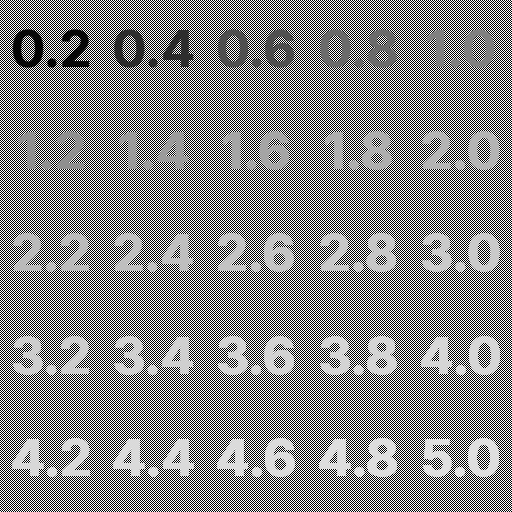

Gamma Test
This image may not be displayed correctly if not using nearest-neighbor scaling. A lot of software ignores gamma when scaling images, typically using bilinear filtering. CSS is used on this page to request the browser to use nearest-neighbor scaling when rendering the image above.